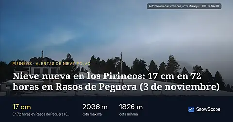

Partes de nieve · Nieve medida
Partes de nieve diarios para esquiadores: dónde está la nieve, qué llega y dónde esquiar, a partir del mapa de nieve de SnowScope y de las estaciones de medida. Cada cifra sale de los datos del día.


La zona blanca del mapa pasó de 45.820 km² (9 de noviembre) a 38.440 km² hoy, y la previsión dice 46.730 km² el 14 de noviembre. Glacier 3000: +26 cm …

El 11 de noviembre los Pirineos apenas tenían nieve: Estació d'esquí de Port-Ainé tiene 0 cm frente a 6 cm del año pasado. La temporada va con semanas de retraso.


Kope recibió 21 cm de nieve nueva en las últimas 72 horas. Ahora tiene unos 11 cm en las pistas altas.

Rasos de Peguera recibió 17 cm de nieve nueva en las últimas 72 horas, 17 cm de ellos en las últimas 24 horas. Ahora tiene unos 13 cm en las pistas …